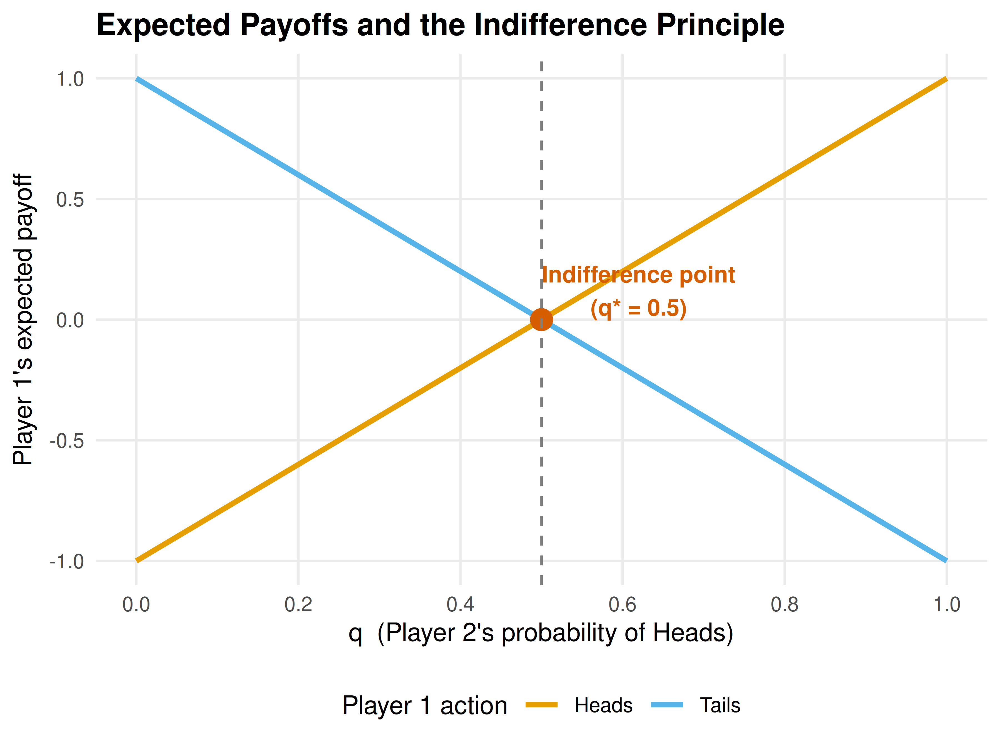

5 Mixed Strategies and the Indifference Principle
Why rational players sometimes randomize, how the indifference principle pins down mixing probabilities, and how to compute and visualize mixed-strategy Nash equilibria in R.
Learning objectives
- Explain why pure-strategy equilibria sometimes fail to exist and why randomization resolves the problem.
- State and apply the indifference principle: at a mixed Nash equilibrium, each player’s mixture makes every opponent indifferent across the strategies in their support.
- Compute mixed-strategy Nash equilibria for 2x2 games by hand and with
solve_2x2_mixed_nash(). - Visualize expected payoffs as a function of mixing probability and identify the indifference point graphically.
5.1 Motivation
Not every strategic situation has a stable deterministic outcome. Consider a penalty kick in football. The striker chooses left or right; the goalkeeper dives left or right. If the goalkeeper could predict the striker’s choice, she would always save the shot. If the striker could predict the goalkeeper, he would always score. Any predictable pattern is exploitable, so both players must be unpredictable — they must randomize.
This is not a peculiarity of sports. Firms randomizing the timing of sales, tax authorities choosing which returns to audit, and poker players blending bluffs with genuine bets all face the same logic. Whenever the interests of the players are sufficiently opposed that no pure-strategy profile is self-enforcing (see 4), stability requires mixing.
The profound insight of Nash (1950) is that this resolution is always available: every finite game possesses at least one Nash equilibrium when players are allowed to randomize. This chapter develops the theory behind that guarantee, introduces the indifference principle that makes mixed equilibria tractable, and implements the computations in R.
5.2 Theory
5.2.1 Mixed strategies defined
In a normal-form game (3), a pure strategy is a definite choice of action. A mixed strategy \(\sigma_i\) for player \(i\) is a probability distribution over \(i\)’s action set \(A_i\). We write \(\sigma_i(a_i)\) for the probability that player \(i\) plays action \(a_i\), with \(\sigma_i(a_i) \geq 0\) for all \(a_i\) and \(\sum_{a_i \in A_i} \sigma_i(a_i) = 1\).
The support of a mixed strategy is the set of actions played with positive probability:
\[ \text{supp}(\sigma_i) = \{ a_i \in A_i : \sigma_i(a_i) > 0 \} \]
A pure strategy is a degenerate mixed strategy whose support contains a single action.
5.2.2 Expected payoffs under mixing
When both players use mixed strategies \(\sigma_1\) and \(\sigma_2\) in a two-player game, player \(i\)’s expected payoff is:
\[\begin{equation} U_i(\sigma_1, \sigma_2) = \sum_{a_1 \in A_1} \sum_{a_2 \in A_2} \sigma_1(a_1)\, \sigma_2(a_2)\, u_i(a_1, a_2) \tag{5.1} \end{equation}\]
In a 2x2 game, let \(p\) denote the probability that Player 1 plays their first action and \(q\) the probability that Player 2 plays their first action. Then Player 1’s expected payoff is:
\[ U_1(p, q) = p\,q\,a_{11} + p\,(1-q)\,a_{12} + (1-p)\,q\,a_{21} + (1-p)\,(1-q)\,a_{22} \]
where \(a_{ij}\) are the entries of Player 1’s payoff matrix.
5.2.3 The indifference principle
The key to computing mixed equilibria is a simple but initially counter-intuitive observation.
The Indifference Principle
At a mixed-strategy Nash equilibrium, each player’s mixture must make every other player indifferent among all actions in their support. If any action in the support yielded a strictly higher expected payoff, the player would shift all probability to that action, contradicting the assumption of mixing.
This has a striking implication: player \(i\)’s equilibrium mixing probability is determined not by \(i\)’s own payoffs, but by the opponent’s payoffs. Player \(i\) mixes in exactly the proportions needed to keep the opponent from exploiting a deviation.
5.2.4 Computing mixed NE in 2x2 games
Consider a 2x2 game with Player 1’s payoff matrix \(A\) and Player 2’s payoff matrix \(B\). Player 2 mixes with probability \(q\) on column 1. Player 1 is indifferent between their two rows when:
\[ q \cdot a_{11} + (1-q) \cdot a_{12} = q \cdot a_{21} + (1-q) \cdot a_{22} \]
Solving for \(q\):
\[\begin{equation} q^* = \frac{a_{22} - a_{12}}{a_{11} - a_{21} - a_{12} + a_{22}} \tag{5.2} \end{equation}\]
Similarly, Player 1 mixes with probability \(p\) on row 1. Player 2 is indifferent when:
\[\begin{equation} p^* = \frac{b_{22} - b_{12}}{b_{11} - b_{21} - b_{12} + b_{22}} \tag{5.3} \end{equation}\]
A mixed NE exists when both \(p^*\) and \(q^*\) fall in \([0, 1]\).
5.2.5 Nash’s existence theorem
Theorem: Existence of Nash Equilibrium
Every finite game — one with finitely many players and finitely many actions per player — has at least one Nash equilibrium in mixed strategies (Nash, 1950).
The proof relies on Kakutani’s fixed-point theorem applied to the best-response correspondences. The importance of this result cannot be overstated: it guarantees that for any well-defined finite game, at least one self-enforcing outcome exists. Without mixed strategies, many natural games (Matching Pennies, Rock-Paper-Scissors) would have no equilibrium at all.
5.3 Implementation in R
5.3.1 Computing mixed equilibria with solve_2x2_mixed_nash()
The function solve_2x2_mixed_nash() from R/solvers.R implements (5.2) and (5.3) directly.
# Matching Pennies payoff matrices
A_mp <- matrix(c(1, -1, -1, 1), nrow = 2, byrow = TRUE,
dimnames = list(c("Heads", "Tails"), c("Heads", "Tails")))
B_mp <- matrix(c(-1, 1, 1, -1), nrow = 2, byrow = TRUE,
dimnames = list(c("Heads", "Tails"), c("Heads", "Tails")))
cat("Matching Pennies\n")#> Matching Pennies
cat("Player 1 (Matcher) payoffs:\n")#> Player 1 (Matcher) payoffs:
A_mp#> Heads Tails
#> Heads 1 -1
#> Tails -1 1
cat("\nPlayer 2 (Mismatcher) payoffs:\n")#>
#> Player 2 (Mismatcher) payoffs:
B_mp#> Heads Tails
#> Heads -1 1
#> Tails 1 -1
# Verify no pure-strategy NE exists
pure_ne <- solve_2x2_pure_nash(A_mp, B_mp)
cat("\nPure-strategy NE:", length(pure_ne), "\n")#>
#> Pure-strategy NE: 0
# Compute mixed NE
mixed_ne <- solve_2x2_mixed_nash(A_mp, B_mp)
cat(sprintf("Mixed NE: p = %.2f (P1 plays Heads), q = %.2f (P2 plays Heads)\n",
mixed_ne$p, mixed_ne$q))#> Mixed NE: p = 0.50 (P1 plays Heads), q = 0.50 (P2 plays Heads)
# Expected payoff at mixed NE
eu_mixed <- mixed_ne$p * mixed_ne$q * A_mp[1,1] +
mixed_ne$p * (1 - mixed_ne$q) * A_mp[1,2] +
(1 - mixed_ne$p) * mixed_ne$q * A_mp[2,1] +
(1 - mixed_ne$p) * (1 - mixed_ne$q) * A_mp[2,2]
cat(sprintf("Player 1 expected payoff at mixed NE: %.2f\n", eu_mixed))#> Player 1 expected payoff at mixed NE: 0.005.3.2 Visualizing the indifference point
The figure below plots Player 1’s expected payoff from each pure action as Player 2 varies \(q\), the probability of playing Heads. At the indifference point \(q^* = 0.5\), both actions yield the same expected payoff, so Player 1 is willing to mix.
q_seq <- seq(0, 1, length.out = 200)
# Player 1's expected payoff from Heads: q * 1 + (1-q) * (-1) = 2q - 1
# Player 1's expected payoff from Tails: q * (-1) + (1-q) * 1 = 1 - 2q
payoff_data <- tibble(
q = rep(q_seq, 2),
expected_payoff = c(2 * q_seq - 1, 1 - 2 * q_seq),
action = rep(c("Heads", "Tails"), each = length(q_seq))
)
# Indifference point
q_star <- 0.5
eu_star <- 2 * q_star - 1 # = 0
p_indiff <- ggplot(payoff_data, aes(x = q, y = expected_payoff, colour = action)) +
geom_line(linewidth = 1.1) +
geom_point(
data = tibble(q = q_star, expected_payoff = eu_star),
aes(x = q, y = expected_payoff),
colour = okabe_ito[6], size = 4, inherit.aes = FALSE
) +
annotate("text", x = q_star + 0.12, y = eu_star + 0.12,
label = paste0("Indifference point\n(q* = ", q_star, ")"),
colour = okabe_ito[6], size = 3.5, fontface = "bold") +
geom_vline(xintercept = q_star, linetype = "dashed", colour = "grey50",
linewidth = 0.5) +
scale_colour_manual(
values = c("Heads" = okabe_ito[1], "Tails" = okabe_ito[2]),
name = "Player 1 action"
) +
scale_x_continuous(name = "q (Player 2's probability of Heads)",
breaks = seq(0, 1, 0.2)) +
scale_y_continuous(name = "Player 1's expected payoff",
breaks = seq(-1, 1, 0.5)) +
theme_publication() +
labs(title = "Expected Payoffs and the Indifference Principle")
p_indiff
Figure 5.1: Player 1’s expected payoff from each pure action as a function of Player 2’s mixing probability \(q\) in Matching Pennies. The lines cross at \(q^* = 0.5\), the indifference point where Player 1 is willing to randomize.
save_pub_fig(p_indiff, "indifference-matching-pennies")When \(q < 0.5\), Player 2 plays Tails more often, so Player 1 prefers Tails (the orange line is above). When \(q > 0.5\), Player 1 prefers Heads (blue line is above). Only at \(q^* = 0.5\) is Player 1 genuinely indifferent and therefore willing to randomize. The same logic, applied from Player 2’s perspective, pins down \(p^* = 0.5\).
5.4 Worked example
5.4.1 Matching Pennies: step-by-step
Two children play Matching Pennies. Each simultaneously shows a coin Heads or Tails. Player 1 (the Matcher) wins if the coins match; Player 2 (the Mismatcher) wins if they differ. The payoff matrices are as defined above.
Step 1: Check for pure-strategy NE. For any pure-strategy profile, one player can profitably deviate. At (Heads, Heads), Player 2 switches to Tails. At (Heads, Tails), Player 1 switches to Tails. No profile is a mutual best response, so no pure NE exists.
Step 2: Apply the indifference principle. Player 1 is indifferent between Heads and Tails when:
\[ q \cdot 1 + (1 - q) \cdot (-1) = q \cdot (-1) + (1 - q) \cdot 1 \] \[ 2q - 1 = 1 - 2q \implies q^* = \tfrac{1}{2} \]
Player 2 is indifferent when:
\[ p \cdot (-1) + (1 - p) \cdot 1 = p \cdot 1 + (1 - p) \cdot (-1) \] \[ 1 - 2p = 2p - 1 \implies p^* = \tfrac{1}{2} \]
Step 3: State the equilibrium. The unique Nash equilibrium is \((p^*, q^*) = (0.5, 0.5)\). Each player randomizes uniformly. The expected payoff for both players is 0.
# Verify with R
cat("Verification via solve_2x2_mixed_nash():\n")#> Verification via solve_2x2_mixed_nash():
result <- solve_2x2_mixed_nash(A_mp, B_mp)
cat(sprintf(" p* = %.4f, q* = %.4f\n", result$p, result$q))#> p* = 0.5000, q* = 0.5000
# Full support enumeration
all_eq <- support_enumeration(A_mp, B_mp)
cat(sprintf(" Pure NE: %d\n", length(all_eq$pure)))#> Pure NE: 0#> Mixed NE: p = 0.50, q = 0.50Step 4: Interpret. The equilibrium has a natural interpretation: each player must be maximally unpredictable. Any bias — say, playing Heads 60% of the time — would be exploited by the opponent. The mixed NE is the only self-enforcing outcome, consistent with Nash’s existence theorem.
5.5 Extensions
Mixed strategies appear throughout the remainder of this book and in virtually every branch of applied game theory:
- Extensive-form games (6) use behavioral strategies — independent mixtures at each information set — which are equivalent to mixed strategies under perfect recall.
- In Bayesian games (7), a player’s type can be viewed as a private signal that induces mixing from the opponent’s perspective, blurring the line between mixed and pure strategies.
- The minimax theorem of Neumann & Morgenstern (1944) shows that in two-player zero-sum games, the mixed NE payoff equals the value of the game, and both players can guarantee this value through optimal mixing.
- Support enumeration generalizes beyond 2x2 games. For larger games, algorithms enumerate all possible support pairs and solve the resulting linear systems; see Shoham & Leyton-Brown (2009) for computational details.
For a thorough treatment of mixed strategies and their properties, consult Osborne (2004) (Chapter 4).
Exercises
Asymmetric Matching Pennies. Consider a variant where Player 1 receives a payoff of 3 (instead of 1) when both play Heads, while all other payoffs remain the same as standard Matching Pennies. Set up the payoff matrices, compute the mixed NE by hand using the indifference principle, and verify with
solve_2x2_mixed_nash(). How does the asymmetry affect Player 2’s mixing probability? Explain the intuition.Inspection game. A worker chooses to Shirk or Work; an employer chooses to Monitor or Trust. Payoffs: (Work, Trust) yields (2, 3), (Work, Monitor) yields (1, 2), (Shirk, Trust) yields (3, 0), and (Shirk, Monitor) yields (0, 1). Find the mixed NE. What is the equilibrium probability that the employer monitors? Does increasing the penalty for caught shirking make shirking less likely in equilibrium?
Graphical verification. Adapt the expected-payoff plot from 5.1 to the Battle of the Sexes game (payoffs as in 4). Plot Player 1’s expected payoff from Opera and from Football as functions of \(q\). Identify the indifference point and verify that it matches the mixed NE from
solve_2x2_mixed_nash().Rock-Paper-Scissors. Rock-Paper-Scissors is a 3x3 symmetric zero-sum game. Argue, using the indifference principle, that the unique mixed NE must assign equal probability \(\frac{1}{3}\) to each action. (Hint: symmetry means the indifference conditions are identical for all pairs of actions.)
Comparative statics. In a 2x2 game with payoff matrices \(A\) and \(B\), suppose we increase \(a_{11}\) (Player 1’s payoff when both play action 1) while holding all other entries fixed. Using (5.2), determine what happens to \(q^*\). Does it increase, decrease, or stay the same? Explain why this result is consistent with the indifference principle — and why it surprises many students.
Solutions appear in D.